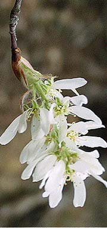

The serviceberry is a small flowering and berry-producing tree that is prized by wildlife as a source of nourishment and protection. Although once exceptionally widespread in the U.S., we do not hear of it as much as we should. Therefore, I have gathered the following notes as an introduction to this fine addition to any habitat for birds and other wildlife.
Genus: Amelanchier (meaning blood-red-referring to the bark of new branches that emerge)
Common names (from the Audobon N.A. Trees book, the Little Golden Guide to Trees, and Trees of the Smokies):

There are several major species of the genus amelanchier (in the Rose family):
The flowers bloom as early or earlier than redbuds. The 5-petal white flowers make a great display while the leaves are not fully unfurled.
The tree has the appearance of a large shrub because it often grows with multiple trunks, each fairly thin, emerging from the same root set. In this property, it resembles a crepe myrtle. However, it can grow to from 20' (roundleaf at some altitude) to 40' (downy).
The summer leaves are green, but autumn foliage can range from red to golden, depending on the variety. They appear to hold their foliage well.
The berries are small, but sweet and edible by everyone, ranging from birds to critters to bears and deer (with the latter two also eating some of the foliage in the wild) to humans. Serviceberries were once common enough that folks made serviceberry pies in season.
The following website have pictures and accounts of the serviceberry in its various forms across the U.S. My Thanks to Tom Shutters, K4FJW, for performing the search that turned them up.
www.cnr.vt.edu/dendro/dendrology/syllabus/aalnifolia.htm (web.archive.org).
www.cnr.vt.edu/dendro/dendrology/syllabus/aarborea.htm (web.archive.org).
ostermiller.org/tree/serviceberry.html
www.mpelectric.com/treebook/fact15.html (web.archive.org).
www.dcnr.state.pa.us/forestry/commontr/serviceb.htm
www.mrgrow.com/plant/plant497.htm (web.archive.org).
www.yale.edu/fes505b/shadbush.html (web.archive.org).
www.cmi.k12.il.us/Urbana/projects/apple/service/bpark/serviceberry.html (web.archive.org).
www.csuchico.edu/~rcooke/serviceberry.html (web.archive.org).